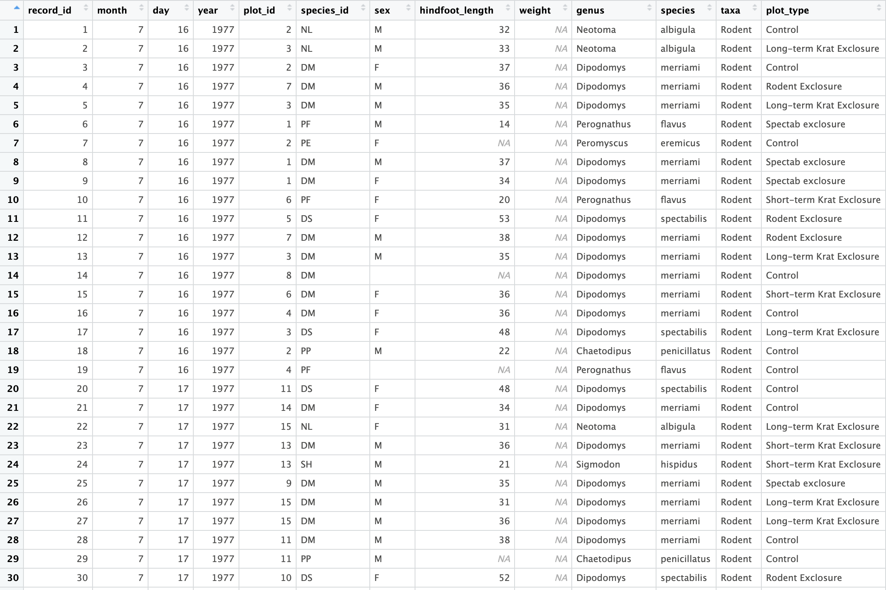
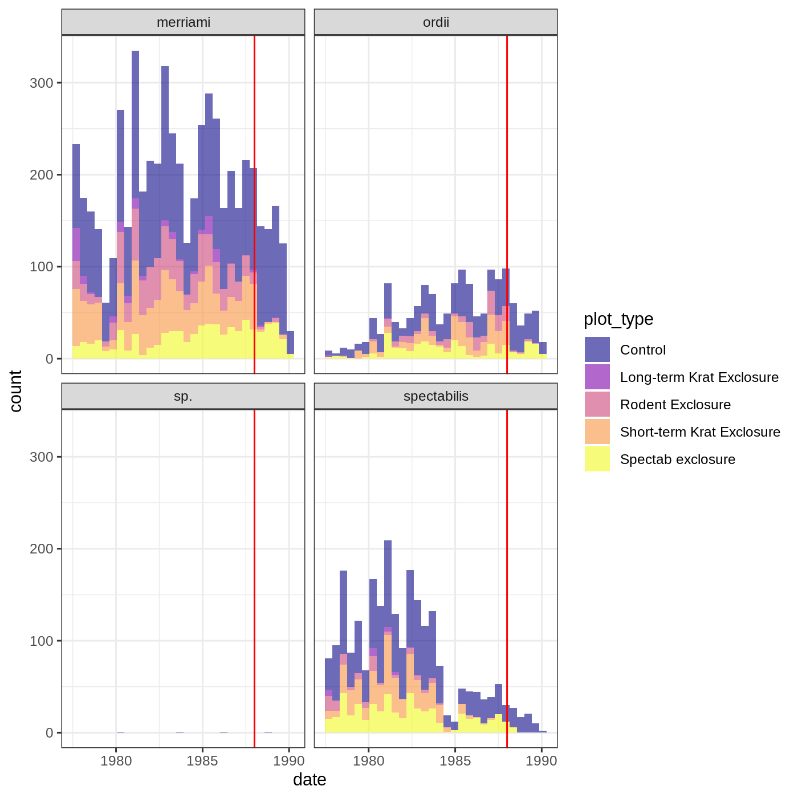
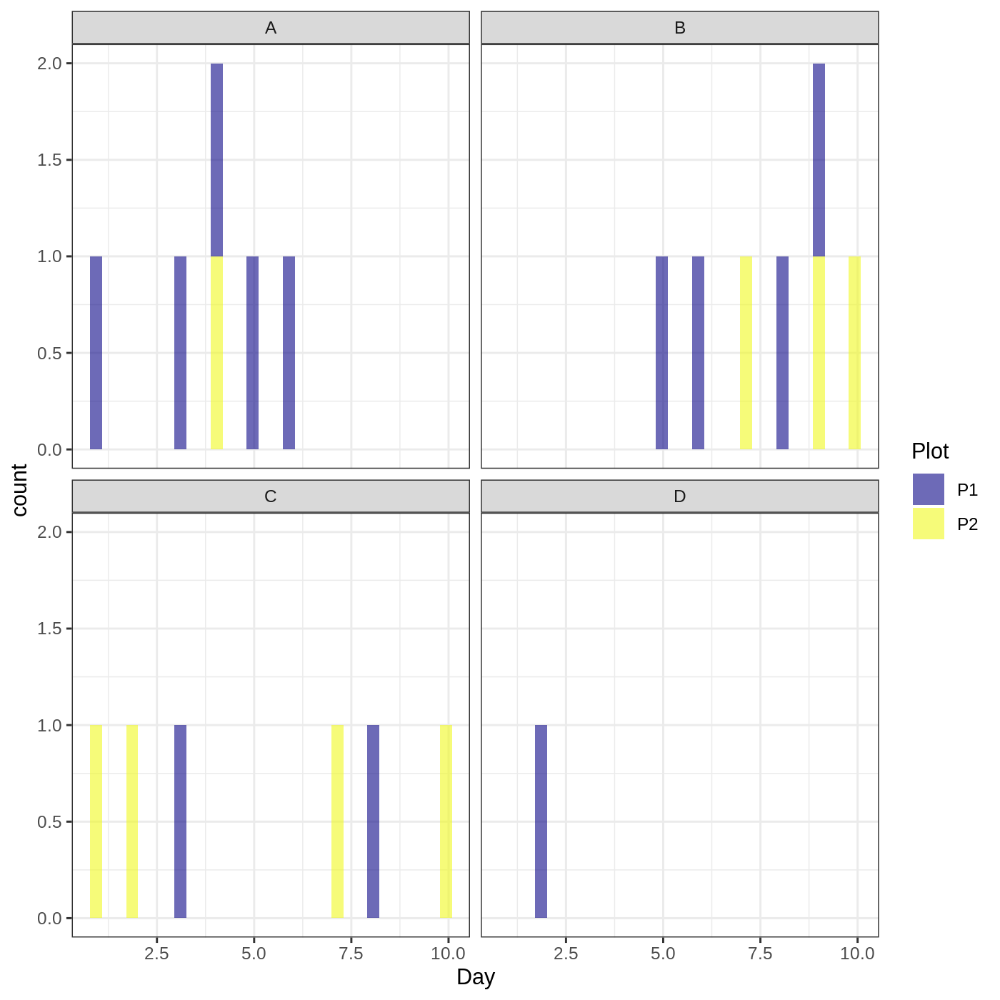
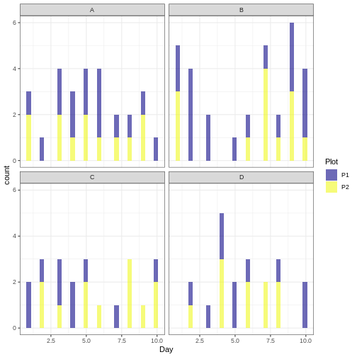
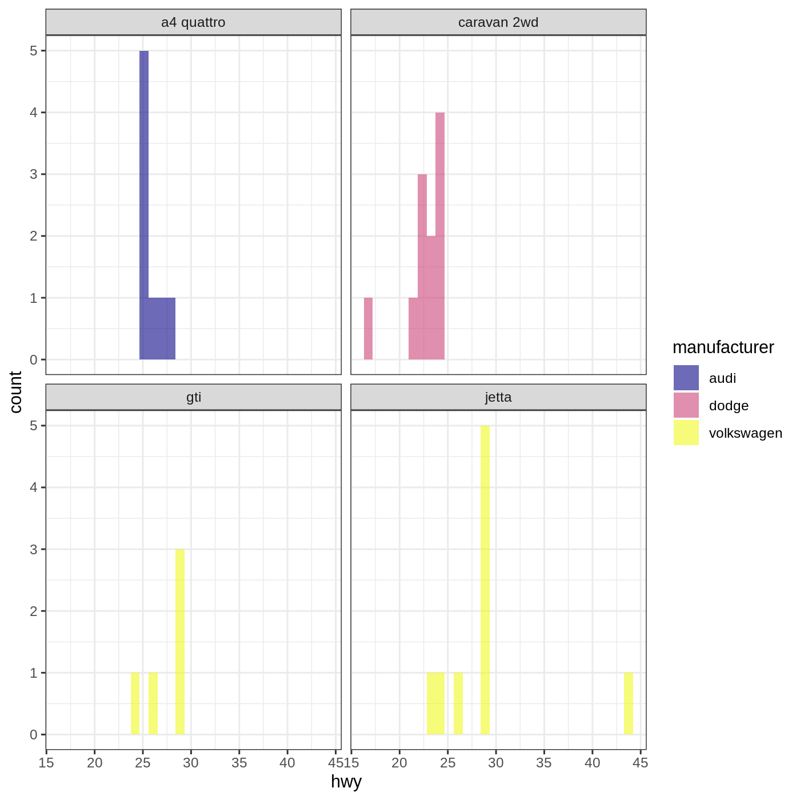
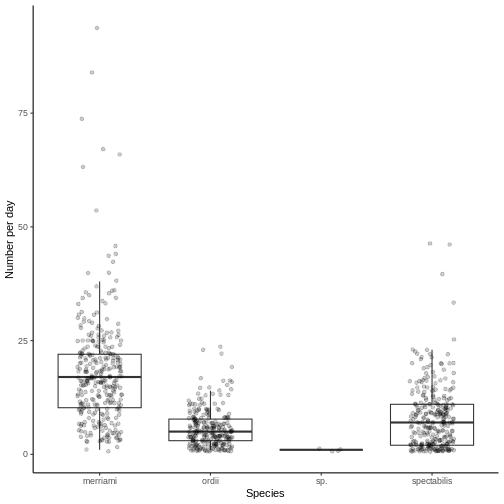
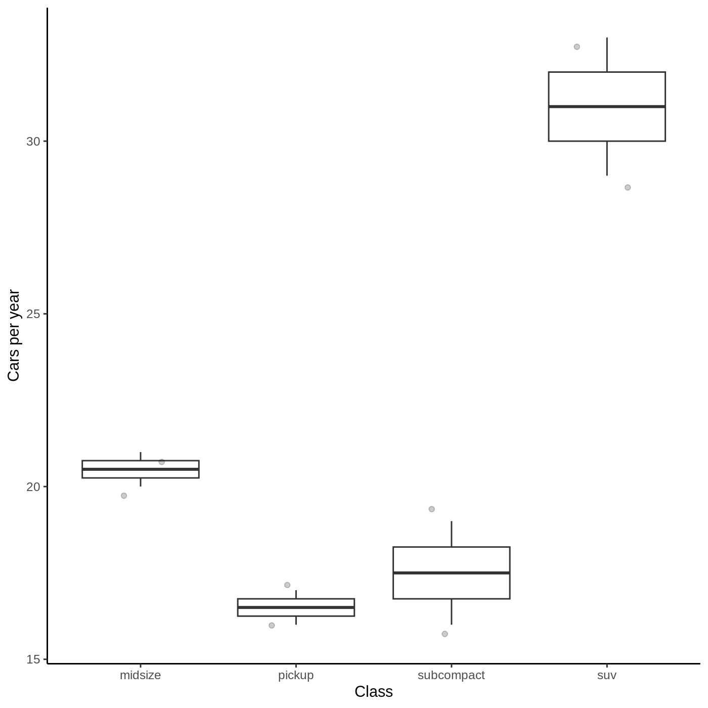

Content from What is a reprex and why is it useful?
Last updated on 2024-11-23 | Edit this page
Overview
Questions
- How is the process of getting help in R different from getting help with other things?
- Why is a minimal reproducible example an important tool for getting help in R?
- What will we be learning in the rest of the course?
Objectives
- Recognize what it takes to debug someone else’s code.
- Define a minimal reproducible example.
- Describe the general workflow that we will cover in the rest of this lesson.
Welcome and introductions
Welcome to “RRRR, I’m Stuck!” We’re glad you’re here! Let’s first take care of a few setup steps. You should have all followed the setup instructions on the workshop website, and you should have both R and RStudio installed.
You should also have the following packages installed: {reprex}, {ratdat}, {dplyr}, and {ggplot2}.
We have a range of levels of experience here. This workshop assumes that you are researcher in ecology/biology who has some prior experience working with R in RStudio.
We won’t be spending a lot of time going over [concepts]. Here’s a handy reference guide to lessen some of the cognitive load… [to be continued.]
You don’t have to be an expert. But we also know that even more experienced R coders might be less familiar with how to get unstuck, so we hope this workshop will be useful to you too.
Minimal Reproducible Example (aka “reprex”)
"Your code examples should be...
Minimal: Use as little code as possible that still produces the same problem
Complete: Provide all parts someone else needs to reproduce your problem in the question itself
Reproducible: Test the code you're about to provide to make sure it reproduces the problem" - [StackOverflow](https://stackoverflow.com/help/minimal-reproducible-example)"The goal of a reprex is to package your problematic code in such a way that other people can run it and feel your pain. Then, hopefully, they can provide a solution and put you out of your misery." - [Get help! (Tidyverse)](https://www.tidyverse.org/help/)"The habit of making little, rigorous, self-contained examples also has the great side effect of making you think more clearly about your programming problems." - [Jenny Bryan](https://posit.co/resources/videos/help-me-help-you-creating-reproducible-examples/)These steps might seem simple, but they can be challenging to put into practice. In this lesson, we will be guiding you through the process of creating a minimal reproducible example. By the end, you will have a workflow to follow next time you get stuck.
Overview of this lesson
[Visual: screenshot or diagram of someone else’s educational resource where they explain what a minimal reproducible example is (with appropriate credit given of course)] –> use this to motivate how we’re going to be going through each step of that in this lesson.
[Visual: diagram of the general process, with questions along the way]–to draw ourselves ### Understand your code ### Apply “first aid” debugging strategies ### Create minimal reproducible data ### Simplify your code and make it minimal ### Prepare to share your reproducible example with others.
Motivating examples
[Screenshots of real requests for help]
Key Points
- Mentors and helpers usually need to run your code in order to help debug it.
- Minimal reproducible examples make it possible for helpers to run your code, which lets them “feel your pain” and figure out what’s wrong.
- Making a minimal reproducible example helps you understand your own problem and often leads to finding the answer yourself!
- You can use the {reprex} package to test whether your example is reproducible.
Content from Understanding your code
Last updated on 2024-11-23 | Edit this page
Overview
Questions
- TODO
Objectives
- Describe in general terms what you want your code to do, and what it is currently doing.
- Break down your code into conceptual steps (pseudocode, or a narrative of what you’re doing)
- Identify relevant variables/objects
Order the conceptual steps of code
Here is a block of code that creates an example data visualization.
R
library(dplyr)
library(ggplot2)
fuel_efficient <- mtcars %>%
filter(mpg > 30) %>%
select(hp, mpg)
p <- ggplot(fuel_efficient, aes(x = hp, y = mpg))+
geom_point()
p
Reorder the following conceptual steps so that they accurately reflect what this code is trying to accomplish.
A. Set up a visualization that will show the relationship between horsepower and fuel efficiency
B. Choose only the most fuel efficient cars
C. Display the plot that was just created
D. Load necessary packages
E. Simplify the dataset to show fewer columns
F. Add points to the initial plotD. Load necessary packages
B. Choose only the most fuel efficient cars
E. Simplify the dataset to show fewer columns
A. Set up a visualization that will show the relationship between horsepower and fuel efficiency
F. Add points to the initial plot
C. Display the plot that was just createdContent from Identify the problem and make a plan
Last updated on 2024-11-23 | Edit this page
Overview
Questions
- What do I do when I encounter an error?
- What do I do when my code outputs something I don’t expect?
- Why do errors and warnings appear in R?
- Which areas of code are responsible for errors?
- How can I fix my code? What other options exist if I can’t fix it?
Objectives
After completing this episode, participants should be able to…
- decode/describe what an error message is trying to communicate
- Identify specific lines and/or functions generating the error message
- Lookup function syntax, use, and examples using R Documentation (?help calls)
- Describe the general category of error message (e.g. syntax error, semantic errors, package-specific errors, etc.)
- Describe the output of code you are seeking
- Identify and quickly fix commonly-encountered R errors
- Identify which problems are better suited for asking for further help, including online help and reprex
Predict the output from a base R function call
Which of the following results when running the following line of code:
R
length(5, 6, 7)
- 3
- Error in length(5, 6, 7) : 3 arguments passed to ‘length’ which requires 1
- NULL
- 1, 1, 1
- Error in length(5, 6, 7) : 3 arguments passed to ‘length’ which requires 1
Content from Minimal Reproducible Data
Last updated on 2024-11-23 | Edit this page
Overview
Questions
- What is a minimal reproducible dataset, and why do I need it?
- What do I need to include in a minimal reproducible dataset?
- How do I create a minimal reproducible dataset?
- How do I make my own dataset reproducible?
Objectives
- Describe a minimal reproducible dataset
- List the requirements for a minimal reproducible dataset
- Identify the important aspects of the data that are necessary to reproduce your coding problem
- Create a dataset from scratch to reproduce a given example
- Subset an existing dataset to reproduce a given example
- Share your own dataset in a way that is accessible and reproducible
4.1 What is a minimal reproducible dataset and why do I need it?
Now that we understand some basic errors and how to fix them, let’s look at what to do when we can’t figure out a solution to our coding problem.
This is when you really need to know how to create a minimal reproducible example (MRE) as we talked about in episode 1.
In general, an MRE will need:
- A minimal dataset that can reproduce the error (or access to a such a dataset)
- Minimal runnable code that can reproduce the error using the minimal dataset
- Basic information about the system, R version, and packages being used
- In case of random functions (e.g.,
sample()), a seed that will produce the same results each time (e.g., useset.seed())
The first step in creating an MRE is to create a shareable dataset that your helper can manipulate and use to reproduce your error and fix your issue.
Why? Remember our IT problem? It would be a lot easier for the IT support person to fix your computer if they could actually touch it, see the screen, and click around.
You’re knitting a sweater and one of the sleeves looks wonky. You call a friend and ask why it’s messed up. They can’t possibly help without being able to hold the sweater and look at the stitches themselves.
It would be great if we could give the helper our entire computer so they could just take over where we left off, but usually we can’t.
Callout
There are several reasons why you might need to create a separate dataset that is minimal and reproducible instead of trying to use your actual dataset. The original dataset may be:
- too large - the Portal dataset is ~35,000 rows with 13 columns and contains data for decades. That’s a lot!
- private - your dataset might not be published yet, or maybe you’re studying an endangered species whose locations can’t easily be shared. Another example: many medical datasets cannot be shared publically.
- hard to send - on most online forums, you can’t attach supplemental files (more on this later). Even if you are just sending data to a colleague, file paths can get complicated, the data might be too large to attach, etc.
- complicated - it would be hard to locate the relevant information.
One example to steer away from are needing a ‘data dictionary’ to
understand all the meanings of the columns (e.g. what is “plot type” in
ratdat?) We don’t our helper to waste valuable time to figure out what everything means. - highly derived/modified from the original file. As an example, you may have already done a bunch of preliminary data wrangling and you don’t want to include all that code when you send the example (see later: the minimal code section), so you need to provide the intermediate dataset directly to your helper.
It’s useful to strip the dataset to its essential parts to identify where exactly the problem area is. A minimal dataset is a dataset that includes the information necessary to run the code, but removes all other unnecessary parts (extra columns/rows, extra context, etc.)
We need minimal reproducible datasets to make it easy/simple/fast for the helper to focus in on the problem at hand and “get their hands dirty” tinkering with the dataset.
4.2 What do I need to include in a minimal reproducible dataset?
It’s actually all in the name:
- it needs to be minimal, which means it only contains the necessary information to run the piece of code with which you are struggling. You can also think of this as being relevant to the problem. Only keep the necessary elements/variables.
- it needs to be reproducible. The data you provide must consistently reproduce the output or error with which you are struggling.
- For it to truly be reproducible, it also needs to be complete, meaning there are no dependencies that have been omitted, and accessible, which means the helper must have access to the relevant data and code (more on this later).
Remember: your helper may not be in the room with you or have access to your computer and the files that are on it!
You might be used to always uploading data from separate files, but helpers can’t access those files. Even if you sent someone a file, they would need to put it in the right directory, make sure to load it in exactly the same way, make sure their computer can open it, etc. Since the goal is to make everyone’s lives as easy as possible, we need to think about our data in a different way–as a dummy object created in the script itself.
Pro-tip
An example of what minimal reproducible examples look like can also
be found in the ?help section, in R Studio. Just scroll all
the way down to where there are examples listed. These will usually be
minimal and reproducible.
For example, let’s look at the function mean:
R
?mean
We see examples that can be run directly on the console, with no additional code.
R
x <- c(0:10, 50)
xm <- mean(x)
c(xm, mean(x, trim = 0.10))
OUTPUT
[1] 8.75 5.50In this case, x is the dummy dataset consisting of just 1 variable. Notice how it was created as part of the example.
Exercise 1
These datasets are not well suited for use in a reprex. For each one, try to reproduce the dataset on your own in R (copy-paste). Does it work? What happened? Explain.

sample_data <- read_csv(“/Users/kaija/Desktop/RProjects/ResearchProject/data/sample_dataset.csv”)dput(complete_old[1:100,])sample_data <- data.frame(species = species_vector, weight = c(10, 25, 14, 26, 30, 17))
- Not reproducible because it is a screenshot.
- Not reproducible because it is a path to a file that only exists on someone else’s computer and therefore you do not have access to it using that path.
- Not minimal, it has far too many columns and probably too many rows.
It is also not reproducible because we were not given the source for
complete_old. - Not reproducible because we are not given the source for
species_vector.
Exercise 2
Let’s say we want to know the average weight of all the species in
our rodents dataset. We try to use the following code…
R
mean(rodents$weight)
OUTPUT
[1] NA…but it returns NA! We don’t know why that is happening and we want to ask for help.
Which of the following represents a minimal reproducible dataset for this code? Can you describe why the other ones are not?
sample_data <- data.frame(month = rep(7:9, each = 2), hindfoot_length = c(10, 25, 14, 26, 30, 17))sample_data <- data.frame(weight = rnorm(10))sample_data <- data.frame(weight = c(100, NA, 30, 60, 40, NA))sample_data <- sample(rodents$weight, 10)sample_data <- rodents_modified[1:20,]
The correct answer is C!
- does not include the variable of interest (weight).
- does not produce the same problem (NA result with a warning message)–the code runs just fine.
- is not reproducible. Sample randomly samples 10 items; sometimes it may include NAs, sometime it may not (not guaranteed to reproduce the error). It can be used if a seed is set (see next section for more info).
- uses a dataset that isn’t accessible without previous data wrangling code–the object rodents_modified doesn’t exist.
4.3 How do I create a minimal reproducible dataset?
This is where many often get stuck: how do I recreate the key elements of my dataset in order to reproduce my error? That seems really hard! If you also find this initially overwhelming, don’t worry. We will break it down into smaller steps.
First, there are three approaches to providing a dataset. You can (1) create one from scratch, (2) use a dataset that is already available, (3) copy/recreate your actual dataset in a way that is minimal and reproducible. The approach you choose to take will depend largely on the nature and source of the problem as well as the complexity of your original dataset. Therefore, no matter which approach we take we first need to know which elements of our dataset are necessary:
- How many variables do we need?
- What data type is each variable?
- How many levels and/or observations are necessary?
- How many of the values need to be the same/different?
- Are there any NAs that could be relevant?
Keep these questions in mind as we move through our examples.
Let’s start from scratch.
4.3.1 Create a dummy dataset from scratch
There are many ways one can create a dummy dataset from scratch.
You can create vectors using c()
R
vector <- c(1,2,3,4)
vector
OUTPUT
[1] 1 2 3 4You can add some randomness by sampling from a vector using
sample().
For example you can sample numbers 1 through 10 in a random order
R
x <- sample(1:10)
x
OUTPUT
[1] 1 8 5 3 7 6 4 9 2 10Or you can randomly sample from a normal distribution
R
x <- rnorm(10)
x
OUTPUT
[1] 0.4542974 -1.1649277 -2.0257380 -0.5615092 0.7459265 -1.7232703
[7] -0.7450010 0.3361192 0.7315899 0.1394792You can also use letters to create factors.
R
x <- sample(letters[1:4], 20, replace=T)
x
OUTPUT
[1] "c" "c" "b" "c" "b" "c" "d" "d" "d" "a" "c" "b" "d" "b" "c" "b" "c" "b" "b"
[20] "a"Remember that a data frame is just a collection of vectors. You can
create a data frame using data.frame (or
tibble in the dplyr package). You can then
create a vector for each variable.
R
data <- data.frame (x = sample(letters[1:3], 20, replace=T),
y = rnorm(1:20))
head(data)
OUTPUT
x y
1 a 1.2385047
2 b 0.5443206
3 b -0.3309462
4 a 0.3185965
5 b 3.3840512
6 a -1.4050286However, when sampling at random you must remember
to set.seed() before sending it to someone to make sure you
both get the same numbers!
Callout
For more handy functions for creating data frames and variables, see
the cheatsheet. For some questions, specific formats can be needed. For
these, one can use any of the provided as.someType functions:
as.factor, as.integer,
as.numeric, as.character,
as.Date, as.xts.
Let’s come back to our kangaroo rats example.
Since we will be working with the same dataset this year, we want to know how many kangaroo rats of each species were found in each plot type in past years so that we can better estimate what sample size we can expect.
Here is the code we use:
R
krats %>%
ggplot(aes(x = date, fill = plot_type)) +
geom_histogram(alpha=0.6)+
facet_wrap(~species)+
theme_bw()+
scale_fill_viridis_d(option = "plasma")+
geom_vline(aes(xintercept = lubridate::ymd("1988-01-01")), col = "red")

Now let’s say we saw this and decided we wanted to get rid of “sp.” but didn’t know how. We want to ask someone online but we first need to create a minimal reproducible example. Remember our questions from earlier…
Excercise 3
Try to answer the following questions oon your own and see if you can determine what we need to include in our minimal reproducible dataset:
- How many variables do we need?
- What data type is each variable?
- How many levels and/or observations are necessary?
- How many of the values need to be the same/different?
- Are there any NAs that could be relevant?
- We will need 3 variables to represent species, plot type, and date.
- Two of our variables will need to be categorical (factors) and one of them continuous.
- To reproduce the figure, we can use 2-4 levels for one factors (species), and maybe 2 levels for the other factor (plot type) to keep it minimal. Our continuous variable could range 1 to 10 (date). We don’t need too many observations, but we do have 2 categories, one with 4 levels. Let’s make it an even 100.
- NAs are not relevant to our problem
- What variables would we need to reproduce this figure?
We will need 3 variables to represent species, plot type, and date.
- What data type is each variable?
Two of our variables (species and plot type) will need to be categorical (factors) and one of them continuous (date).
- How many levels and/or observations are necessary?
For species, our original figure has 4 levels. We could reduce this to 2, but let’s keep it at 4. Let’s call these species A, B, C, and D.
R
species <- c('A','B','C','D')
For plot type, our original figure has 5 levles, but we could cut it down to 2. Let’s call them P1 and P2. In reality, we probably don’t even need this for this question, but for the sake of practicing let’s add it in.
R
plot.type <- c('P1','P2')
Lastly, date is our continuous variable. To mimic our original figure, we probably want it long enough to show multiple bars along the x axis, but we still want to keep it minimal. Let’s just call it days and make it 1-10.
R
days <- c(1:10)
Great! Now we have all of our variables, we need to go sampling. How many observations do we need? Again, we want enough to show a similar graph, but also keep it minimal. We need to sample each plot for 10 days, and each plot should give us a varying number of species, of which we have 4. Let’s say we find 20 individuals.
We can simulate the data collected each day by using
sample() and specifying our number of observations (we need
to sample 20 times). Since we want species and plots to repeat, we will
also set replace to T.
All together we get:
R
sample_data <- data.frame(
Day = days,
Plot = sample(plot.type, 20, replace=T),
Species = sample(species, 20, replace=T)
)
sample_data
OUTPUT
Day Plot Species
1 1 P2 B
2 2 P1 B
3 3 P1 B
4 4 P2 D
5 5 P2 C
6 6 P2 C
7 7 P1 B
8 8 P1 B
9 9 P2 A
10 10 P2 B
11 1 P1 D
12 2 P1 D
13 3 P2 A
14 4 P2 A
15 5 P2 A
16 6 P2 C
17 7 P1 B
18 8 P1 C
19 9 P2 D
20 10 P2 BGreat! Now we have a sample data set that is minimal, but is is reproducible?
It isn’t! Why?
Remember: sample() creates a random dataset! This will not be
consistently reproducible. In order to make this example fully
reproducible we should first set.seed().
R
set.seed(1)
sample_data <- data.frame(
Species = sample(species, 20, replace=T),
Plot = sample(plot.type, 20, replace=T),
Day = days
)
head(sample_data)
OUTPUT
Species Plot Day
1 A P1 1
2 D P1 2
3 C P1 3
4 A P1 4
5 B P1 5
6 A P1 6Now we have our minimal reproducible example! But are we sure it reproduces what we are trying to reproduce? Let’s test it out.
R
sample_data %>%
ggplot(aes(x = Day, fill = Plot)) +
geom_histogram(alpha=0.6)+
facet_wrap(~Species)+
theme_bw()+
scale_fill_viridis_d(option = "plasma")
OUTPUT
`stat_bin()` using `bins = 30`. Pick better value with `binwidth`.
Yes!
It is certainly simplified, but it has the elements we want it to have. And now we can ask how to get rid of “C”.
Given that this was a very simple question, we could have simplified this example even further; we could have used 2 species and even just 2 days, in which case a simple solution could be
R
sample_data2 <- data.frame(
species = sample(c('A','B'), 6, replace = T),
days = 1:2
)
sample_data2 %>%
ggplot(aes(x=days)) +
geom_histogram()+
facet_wrap(~species)
OUTPUT
`stat_bin()` using `bins = 30`. Pick better value with `binwidth`.
which is even more simplistic than the one before but still contains the elements we are interested in–we have a set of “species” separated into facets and we want to get rid of one of them. In reality, had we realized that we needed to get rid of the rows with “sp.” in them, we could have ignored the figure entirely and posed the question about the data alone. E.g., “how do I remove rows that contain a specific name?” Then give just the example dataset we created.Exercise 4 (10 minutes) – optional?
Now practice doing it yourself. Create a data frame with:
A. One categorical variable with 2 levels and one continuous variable. B. One continuous variable that is normally distributed. C. Name, sex, age, and treatment type.
4.3.2 Create a dataset using an existing dataset
If you don’t want to create a dataset from scratch, maybe because you
have too many variables or it’s a more complicated structure and you are
not sure where the error is, you can subset from an existing dataset.
Useful functions for subsetting a dataset include subset(),
head(), tail(), and indexing with [] (e.g.,
iris[1:4,]). Alternatively, you can use tidyverse functions like
select(), and filter() from the tidyverse. You
can also use the same sample() functions we covered
earlier.
A list of readily available datasets can be found using
library(help="datasets"). You can then use ?
in front of the dataset name to get more information about the contents
of the dataset.
When working with a built-in dataset you still have to edit your code to fit the new data, but it is probably faster than building a large dataset from scratch, and it gets easier with practice!
Let’s keep using our previous example, how can we reproduce that
figure using the existing dataset mpg. First, let’s
interrogate this dataset to see what we are working with.
R
?mpg
Which variable from mpg do you think we could use to replace our variables? Remember: we need one for species, one for plot type, and one for date.
There are certainly multiple options! Let’s go with model for species, manufacturer for plot type, and year for date.
R
data <- mpg %>% select(model, manufacturer, year)
dim(data)
OUTPUT
[1] 234 3R
glimpse(data)
OUTPUT
Rows: 234
Columns: 3
$ model <chr> "a4", "a4", "a4", "a4", "a4", "a4", "a4", "a4 quattro", "…
$ manufacturer <chr> "audi", "audi", "audi", "audi", "audi", "audi", "audi", "…
$ year <int> 1999, 1999, 2008, 2008, 1999, 1999, 2008, 1999, 1999, 200…We only need 4 species, and 5 plots. How many do we have here?
R
length(unique(data$model))
OUTPUT
[1] 38R
length(unique(data$manufacturer))
OUTPUT
[1] 15Certainly more than we need. Then let’s simplify.
R
set.seed(1)
data <- data %>%
filter(model %in% sample(model, 4, replace = F))
Cool, now we have just 4 models. BUT we also only have 2 years… so maybe year wasn’t the best choice afterall, let’s change it to hwy
R
data <- mpg %>% select(model, manufacturer, hwy) %>%
filter(model %in% sample(model, 4, replace = F))
Now we can try our plot
R
data %>%
ggplot(aes(x = hwy, fill = manufacturer)) +
geom_histogram(alpha=0.6)+
facet_wrap(~model)+
theme_bw()+
scale_fill_viridis_d(option = "plasma")
OUTPUT
`stat_bin()` using `bins = 30`. Pick better value with `binwidth`.
Do you think that works?
It turns out that maybe manufacturer was not the best representation for plot, since we do need each car model to appear in each “plot”. What would all cars have?
Let’s change model to manufacturer, and let’s add class.
R
set.seed(1)
data2 <- mpg %>% select(manufacturer, class, hwy) %>%
filter(manufacturer %in% sample(manufacturer, 4, replace = F))
data2 %>%
ggplot(aes(x = hwy, fill = class)) +
geom_histogram(alpha=0.6)+
facet_wrap(~manufacturer)+
theme_bw()+
scale_fill_viridis_d(option = "plasma")
OUTPUT
`stat_bin()` using `bins = 30`. Pick better value with `binwidth`.That’s more like it! You can keep playing around with it or you can give it more thought apriori, but either way you get the idea. While what we get is not an exact replica, it’s an analogy. The important thing is that we created a figure whose basic elements/structure or “key features” remain intact–namely, the number and type of variables and categories.
Now it is your turn!
Excercise 4
For each of the following, identify which data are necessary to
create a minimal reproducible dataset using mpg.
- We want to know how the highway mpg has changed over the years
- We need a list of all “types” of cars and their fuel type for each
manufacturer
- We want to compare the average city mpg for a compact car from each
manufacturer
OR change the above challenge to be about ratdat
OR move to…
Now that we know how many of each species were captured over the years, we want to know how many of each species you might expect to catch per day.
Let’s practice how we would do this with our data.
We end up with the following code:
R
krats_per_day <- krats %>%
group_by(date, year, species) %>%
summarize(n = n()) %>%
group_by(species)
OUTPUT
`summarise()` has grouped output by 'date', 'year'. You can override using the
`.groups` argument.R
krats_per_day %>%
ggplot(aes(x = species, y = n))+
geom_boxplot(outlier.shape = NA)+
geom_jitter(width = 0.2, alpha = 0.2)+
theme_classic()+
ylab("Number per day")+
xlab("Species")
Excercise 5
How might you reproduce this using the mpg dataset?
Substitute krats with cars, species with class, date with year. The question becomes, how many cars of each class are produced per year?
R
set.seed(1)
cars_per_y <- mpg %>%
filter(class %in% sample(class, 4, replace=F)) %>%
group_by(class, year) %>%
summarize(n=n()) %>%
group_by(class)
OUTPUT
`summarise()` has grouped output by 'class'. You can override using the
`.groups` argument.R
cars_per_y %>%
ggplot(aes(x = class, y = n))+
geom_boxplot(outlier.shape = NA)+
geom_jitter(width = 0.2, alpha=0.2)+
theme_classic()+
ylab("Cars per year")+
xlab("Class")

R
# this is only giving us 3 classes even though we asked for 4, why?
# Because it is sampling from the column "class" which has many of the same class.
# Therefore, we need to specify that we want to sample from within the unique values in "class".
cars_per_y <- mpg %>%
filter(class %in% sample(unique(mpg$class), 4, replace=F)) %>%
group_by(class, year) %>%
summarize(n=n()) %>%
group_by(class)
OUTPUT
`summarise()` has grouped output by 'class'. You can override using the
`.groups` argument.R
cars_per_y %>%
ggplot(aes(x = class, y = n))+
geom_boxplot(outlier.shape = NA)+
geom_jitter(width = 0.2, alpha=0.2)+
theme_classic()+
ylab("Cars per year")+
xlab("Class")

4.4 Using your own data by creating a minimal subset
Perhaps you are now thinking that if you can use a subset of an
existing dataset, wouldn’t it be easier to just subset my own data to
make it minimal? You are not wrong. There are cases when you can subset
your own data in the same way you would subset an existing dataset to
make a minimal dataset, the key is to then make it reproducible. That’s
when we use the function dput, which essentially takes your
dataframe and give you code to reproduce it!
For example, using our previous data2
R
dput(cars_per_y)
OUTPUT
structure(list(class = c("midsize", "midsize", "pickup", "pickup",
"subcompact", "subcompact", "suv", "suv"), year = c(1999L, 2008L,
1999L, 2008L, 1999L, 2008L, 1999L, 2008L), n = c(20L, 21L, 16L,
17L, 19L, 16L, 29L, 33L)), class = c("grouped_df", "tbl_df",
"tbl", "data.frame"), row.names = c(NA, -8L), groups = structure(list(
class = c("midsize", "pickup", "subcompact", "suv"), .rows = structure(list(
1:2, 3:4, 5:6, 7:8), ptype = integer(0), class = c("vctrs_list_of",
"vctrs_vctr", "list"))), class = c("tbl_df", "tbl", "data.frame"
), row.names = c(NA, -4L), .drop = TRUE))As you can see, even with our minimal dataset, it is still quite a chunk of code. What if you tried putting in krats_per_day? It is clear that either way you will still need to considerably minimize your data. Even then, it will often be simpler to provide an existing dataset or provide one from scratch. Furthermore, often we are able to discover the source of our error or solve our own problem when we have to go through the process of breaking it down into its essential components!
Nevertheless, it remains an option for when your data appears too complex or you are not quite sure where your error lies and therefore are not sure what minimal components are needed to reproduce the example.
Callout
What about NAs? If your data has NAs and they may be causing
the problem, it is important to include them in your MR dataset. You can
find where there are NAs in your dataset by using is.na,
for example: is.na(krats$weight). This will return a
logical vector or TRUE if the cell contains an NA and FALSE if not. The
simplest way to include NAs in your dummy dataset is to directly include
it in vectors: x <- c(1,2,3,NA). You can also subset a
dataset that already contains NAs, or change some of the values to NAs
using mutate(ifelse()) or substitute all the values in a
column by sampling from within a vector that contains NAs.
One important thing to note when subsetting a dataset with NAs is that subsetting methods that use a condition to match rows won’t necessarily match NA values in the way you expect. For example
R
test <- data.frame(x = c(NA, NA, 3, 1), y = rnorm(4))
test %>% filter(x != 3)
OUTPUT
x y
1 1 0.7635935R
# you might expect that the NA values would be included, since “NA is not equal to 3”. But actually, the expression NA != 3 evaluates to NA, not TRUE. So the NA rows will be dropped!
# Instead you should use is.na() to match NAs
test %>% filter(x != 3 | is.na(x))
OUTPUT
x y
1 NA -0.294720447
2 NA -0.005767173
3 1 0.763593461Here are some more practice exercises if you wish to test your knowledge
(I copied these from excercise 6 in the google doc… but I’m not sure that they are getting at the point of the lesson…)
Excercise 6
Each of the following examples needs your help to create a dataset that will correctly reproduce the given result and/or warning message when the code is run. Fix the dataset shown or fill in the blanks so it reproduces the problem.
-
set.seed(1)sample_data <- data.frame(fruit = rep(c(“apple”, “banana”), 6), weight = rnorm(12))ggplot(sample_data, aes(x = fruit, y = weight)) + geom_boxplot()HELP: how do I insert an image from clipboard?? Is it even possible? - bodyweight <- c(12, 13, 14, , ) max(bodyweight) [1] NA
- sample_data <- data.frame(x = 1:3, y = 4:6) mean(sample_data\(x) [1] NA Warning message: In mean.default(sample_data\)x): argument is not numeric or logical: returning NA
- sample_data <- ____ dim(sample_data) NULL
- “fruit” needs to be a factor and the order of the levels must be
specified:
sample_data <- data.frame(fruit = factor(rep(c("apple", "banana"), 6), levels = c("banana", "apple")), weight = rnorm(12)) - one of the blanks must be an NA
- ?? + what’s really the point of this one?
sample_data <- data.frame(x = factor(1:3), y = 4:6)
Key Points
- A minimal reproducible dataset contains (a) the minimum number of lines, variables, and categories, in the correct format, to reproduce a certain problem; and (b) it must be fully reproducible, meaning that someone else can reproduce the same problem using only the information provided.
- You can create a dataset from scratch using
as.data.frame, you can use available datasets likeirisor you can use a subset of your own dataset - You can share your own data by first subsetting it into its minimal
components and then using
dput()to create it via reproducible code
Content from Minimal Reproducible Code
Last updated on 2024-11-23 | Edit this page
Overview
Questions
- Why can’t I just post my whole script?
- Which parts of my code are directly relevant to my problem?
- Which parts of my code are necessary in order for the problem area to run correctly?
- I feel overwhelmed by this script–where do I even start?
Objectives
- Explain the value of a minimal code snippet.
- Simplify a script down to a minimal code example.
- Identify the problem area of the code.
- Identify supporting parts of the code that are essential to include.
- Identify pieces of code that can be removed without affecting the central functionality.
- Have a road map to follow to simplify your code.
You’re excited by how much progress you’re making in your research. You’ve made a lot of descriptive plots and gained some interesting insights into your data. Now you’re excited to investigate whether the k-rat exclusion plots are actually working. You set to work writing a bunch of code to do this, using a combination of descriptive visualizations and linear models.
So far, you’ve been saving all of your analysis in a script called “krat-analysis.R”. At this point, it looks something like this:
R
# Kangaroo rat analysis using the Portal data
# Created by: Research McResearchface
# Last updated: 2024-11-22
# Load packages to use in this script
library(readr)
library(dplyr)
library(ggplot2)
library(stringr)
# Read in the data
rodents <- read_csv("scripts/data/surveys_complete_77_89.csv")
### DATA WRANGLING ####
glimpse(rodents) # or click on the environment
str(rodents) # an alternative that does the same thing
head(rodents) # or open fully with View() or click in environment
table(rodents$taxa)
# Abundance distribution of taxa
rodents %>%
ggplot(aes(x=taxa))+
geom_bar()
# Examine NA values
## How do we find NAs anyway? ----
head(is.na(rodents$taxa)) # logical--tells us when an observation is an NA (T or F)
# Not very helpful. BUT
sum(is.na(rodents$taxa)) # sum considers T = 1 and F = 0
# Simplify down to just rodents
rodents <- rodents %>%
filter(taxa == "Rodent")
glimpse(rodents)
# Just kangaroo rats because this is what we are studying
krats <- rodents %>%
filter(genus == "Dipodomys")
dim(krats) # okay, so that's a lot smaller, great.
glimpse(krats)
# Prep for time analysis
# To examine trends over time, we'll need to create a date column
krats <- krats %>%
mutate(date = lubridate::ymd(paste(year, month, day, sep = "-")))
# Examine differences in different time periods
krats <- krats %>%
mutate(time_period = ifelse(year < 1988, "early", "late"))
# Check that this went through; check for NAs
table(krats$time_period, exclude = NULL) # learned how to do this earlier
### QUESTION 1: How many k-rats over time in the past? ###
# How many kangaroo rats of each species were found at the study site in past years (so you know what to expect for a sample size this year)?
# Numbers over time by plot type
krats %>%
ggplot(aes(x = date, fill = plot_type)) +
geom_histogram()+
facet_wrap(~species)+
theme_bw()+
scale_fill_viridis_d(option = "plasma")+
geom_vline(aes(xintercept = lubridate::ymd("1988-01-01")), col = "dodgerblue")
# Oops we gotta get rid of the unidentified k-rats
krats <- krats %>%
filter(species != "sp.")
# Re-do the plot above
krats %>%
ggplot(aes(x = date, fill = plot_type)) +
geom_histogram()+
facet_wrap(~species)+
theme_bw()+
scale_fill_viridis_d(option = "plasma")+
geom_vline(aes(xintercept = lubridate::ymd("1988-01-01")), col = "dodgerblue")
# How many individuals caught per day?
krats_per_day <- krats %>%
group_by(date, year, species) %>%
summarize(n = n()) %>%
group_by(species)
krats_per_day %>%
ggplot(aes(x = species, y = n))+
geom_boxplot(outlier.shape = NA)+
geom_jitter(width = 0.2, alpha = 0.2, aes(col = year))+
theme_classic()+
ylab("Number per day")+
xlab("Species")
#### QUESTION 2: Do the k-rat exclusion plots work? #####
# Do the k-rat exclusion plots work? (i.e. Does the abundance of each species differ by plot?)
# If the k-rat plots work, then we would expect:
# A. Fewer k-rats overall in any of the exclusion plots than in the control, with the fewest in the long-term k-rat exclusion plot
counts_per_day <- krats %>%
group_by(year, plot_id, plot_type, month, day, species_id) %>%
summarize(count_per_day = n())
counts_per_day %>%
ggplot(aes(x = plot_type, y = count_per_day, fill = species_id, group = interaction(plot_type, species_id)))+
geom_boxplot(outlier.size = 0.5)+
theme_minimal()+
labs(title = "Kangaroo rat captures, all years",
x = "Plot type",
y = "Individuals per day",
fill = "Species")
# B. For Spectabilis-specific exclosure, we expect a lower proportion of spectabilis there than in the other plots.
control_spectab <- krats %>%
filter(plot_type %in% c("Control", "Spectab exclosure"))
prop_spectab <- control_spectab %>%
group_by(year, plot_type, species_id) %>%
summarize(total_count = n(), .groups = "drop_last") %>%
mutate(prop = total_count/sum(total_count)) %>%
filter(species_id == "DS") # keep only spectabilis
prop_spectab %>%
ggplot(aes(x = year, y = prop, col = plot_type))+
geom_point()+
geom_line()+
theme_minimal()+
labs(title = "Spectab exclosures did not reduce proportion of\nspectab captures",
y = "Spectabilis proportion",
x = "Year",
color = "Plot type")
#### MODELING ####
counts_mod <- lm(count_per_day ~ plot_type + species_id, data = counts_per_day)
summary(counts_mod)
# with interaction term:
counts_mod_interact <- lm(count_per_day ~ plot_type*species_id, data = counts_per_day)
summary(counts_mod_interact)
summary(counts_mod)
summary(counts_mod_interact)
Why is it important to simplify code?
Learning how to simplify your code is one of the most important parts of making a minimal reproducible example, asking others for help, and helping yourself.
Making sense of code
Reflect on a time when you opened a coding project after a long time away from it. Or maybe you had to look through and try to run someone else’s code.
(If you have easy access to one of your past projects, maybe try opening it now and taking a look through it right now!)
How do situations like this make you feel? Write some reflections on the Etherpad.
This exercise should take about 5 minutes.
Debugging is a time when it’s common to have to read through long and complex code (either your own or someone else’s). That means that the person doing the debugging is likely to experience some of the emotions we just talked about.
The more we can reduce the negative emotions and make the experience of solving errors easy and painless, the likelier you are to find solutions to your problems (or convince others to take the time to help you). Helpers are doing us a favor–why put barriers in their way?
Let’s illustrate the importance of simplifying our code by focusing on an error in the big long analysis script we created, shown above. Let’s imagine we’re getting ready to show these preliminary results to our advisor, but when we re-run the whole script, we realize there’s a problem.
[DESCRIPTION OF PROBLEM HERE]
A road map for simplifying your code
In this episode, we’re going to walk through a road map for breaking your code down to its simplest form while making sure that 1) it still runs, and 2) it reproduces the problem you care about solving.
For now, we’ll go through this road map step by step. At the end, we’ll review the whole thing. One takeaway from this lesson is that there is a step by step process to follow, and you can refer back to it if you feel lost in the future.
Step 0. Create a separate script
When we know there’s a problem with our script, it helps to start solving it by examining smaller parts of the code in a separate script, instead of editing the original.
A separate place for minimal code
Create a new, blank R script and give it a name, such as “reprex-script.R”
There are several ways to make an R script - File > New File > R Script - Click the white square with a green plus sign at the top left corner of your RStudio window - Use a keyboard shortcut: Cmd + Shift + N (on a Mac) or Ctrl + Shift + N (on Windows)
Once you’ve created the script, click the Save button to name and save it.
This exercise should take about 2 minutes.
Step 1. Identify the problem area
Now that we have a script, let’s zero in on what’s broken.
First, we should use some of the techniques we learned in the “Identify the Problem” episode and see if they help us solve our error.
[MORE CONTENT THAT CALLS BACK TO PL’S EPISODE HERE]
In this particular case, though, we weren’t able to completely resolve our error.
[WHY? maybe because it’s not an error but a case of “the plot isn’t returning what we want”? Or maybe it’s an extra difficult error message that we can’t find an easy answer to?
I need to figure out what error to introduce into the script in the first place… that will determine the justification to use here.]
(Using the plot example for now)
Okay, so we know that the plot doesn’t look the way we want it to. Which part of the code created that plot? One way to figure this out if we’re not sure is to step through the code line by line.
Stepping through code, line by line
Placing your cursor on a line of code and using the keyboard shortcut Cmd + Enter (Mac) or Ctrl + Enter (Windows) will run that line of code and it will automatically advance your cursor to the next line. This makes it easy to “step through” your code without having to click or highlight.
Yay, we found the trouble spot! Let’s go ahead and copy that line of code and paste it over into the empty script we created, “reprex-script.R”.
Step 2. Give context: functions and packages
R code consists primarily of variables and functions.
Where do functions come from?
When coding in R, we use a lot of different functions. Where do those functions come from? How can we make sure that our helpers have access to those sources? Take a moment to brainstorm.
This exercise should take about 3 minutes.
Functions in R typically come from packages. Some packages, such as
{base} and {stats}, are loaded in R by
default, so you might not have realized that they are packages too.
You can see a complete list of functions in {base} and
{stats} by running library(help = "base") or
library(help = "stats").
Some functions might be user-defined. In that case, you’ll need to make sure to include the function definition in your reprex.
Finding functions
Sometimes it can be hard to figure out where a function comes from. Especially if a function comes from a package you use frequently, you might not remember where it comes from!
You can search for a function in the help docs with
??fun (where “fun” is the name of the function). To
explicitly declare which package a function comes from, you can use a
double colon ::–for example, dplyr::select().
Declaring the function with a double colon also allows you to use that
function even if the package is not loaded, as long as it’s
installed.
The quickest way to make sure others have access to the functions
contained in packages is to include a library() call in
your reprex, so they know to load the package too.
Which packages are essential?
In each of the following code snippets, identify the necessary packages (or other code) to make the example reproducible.
- [Example (including an ambiguous function:
dplyr::select()is a good one because it masksplyr::select())] - [Example where you have to look up which package a function comes from]
- [Example with a user-defined function that doesn’t exist in any package]
This exercise should take about 5 minutes.
FIXME
Looking through the problem area that we isolated, we can see that
we’ll need to load the following packages: FIXME -
{package} - {package} -
{package}
Let’s go ahead and add those as library() calls to the
top of our script.
Installing vs. loading packages
But what if our helper doesn’t have all of these packages installed? Won’t the code not be reproducible?
Typically, we don’t include install.packages() in our
code for each of the packages that we include in the
library() calls, because install.packages() is
a one-time piece of code that doesn’t need to be repeated every time the
script is run. We assume that our helper will see
library(specialpackage) and know that they need to go
install “specialpackage” on their own.
Technically, this makes that part of the code not reproducible! But
it’s also much more “polite”. Our helper might have their own way of
managing package versions, and forcing them to install a package when
they run our code risks messing up our workflow. It is a common
convention to stick with library() and let them figure it
out from there. FIXME this feels over-explained… pare it down!
Installing packages conditionally
There is an alternative approach to installing packages [insert content/example of the if(require()) thing–but note that explaining this properly requires explaining why require() is different from library(), why it returns a logical, etc. and is kind of a rabbit hole that I don’t want to go down here.]
Step 3. Give context: variables and datasets
Isolating the problem area and loading the necessary packages and functions was an important step to making our example code self-contained. But we’re still not done making the code minimal and reproducible. Almost certainly, our code snippet relies on variables, such as datasets, that our helper won’t have access to.
The piece of code that we copied over came from line [LINE NUMBER] of our analysis script. We had done a lot of analyses before then, including modifying datasets and creating intermediate objects/variables.
Our code snippet depends on all those previous steps, so when we isolate it in a new script, it might not be able to run anymore. More importantly, when a helper doesn’t have access to the rest of our script, the code might not run for them either.
To fix this, we need to provide some additional context around our reprex so that it runs.
Identifying variables
For each of the following code snippets, identify all the variables used
- [Straightforward example]
- [Example where they use a built-in dataset but it contains a column
that that dataset doesn’t actually contain, i.e. because it’s been
modified previously. Might be good to use the
datecolumn that we put intokratsfor this]
This exercise should take about 5 minutes.
FIXME
As you might have noticed, identifying these variables isn’t always straightforward. Sometimes variables depend on other variables, and before you know it, you end up needing the entire script.
Let’s work together as a group to sketch out which variables depend on which others. A helpful way to do this is to start with the variables included in our code snippet and ask, for each one, “Where did this come from?”
[Make a big dependency graph. The point is to illustrate that it gets very long and you can’t always rely on this process to identify a simple way to include the needed variables.]
How can we make sure that helpers can access these objects too, without providing them the entire long script?
Theoretically, we could meticulously trace each object back and make sure to include the code to create all of its predecessors from the original data, which we would provide to our helper. But pretty soon, we might find that we’re just giving the helper the original (long, complicated) script!
As with other types of writing, creating a good minimal reprex takes hard work and time.
“I would have written a shorter letter, but I did not have the time.”
- Blaise Pascal, Lettres Provinciales, 1657
Computational reproducibility
Every object should be able to map back to either a file, a built-in dataset in R, or another intermediate step. If you found any variables where you weren’t able to answer the “Where did this come from?” question, then that’s a problem! Did you build a script that mistakenly relied on an object that was in your environment but was never properly defined?
Mapping exercises like this can be a great way to check whether entire script is reproducible. Reproducibility is important in more cases than just debugging! More and more journals are requiring full analysis code to be posted, and if that code isn’t reproducible, it will severely hamper other researchers’ efforts to confirm and expand on what you’ve done.
Various packages can help you keep track of your code and make it
more reproducible. Check out the {targets}
and {renv}
packages in particular if you’re interested in learning more.
Luckily, we can make our lives easier if we realize that helpers don’t always need the exact same variables and datasets, just reasonably good stand-ins. Let’s think back to the last episode, where we talked about different ways to create minimal reproducible datasets. We can lean on those skills here to make our example reproducible and greatly reduce the amount of code that we need to include.
Incorporating minimal datasets
Brainstorm some places in our reprex where you could use minimal reproducible data to make your problem area code snippet reproducible.
Which of the techniques from the data episode will you choose in each case, and why?
This exercise should take about 5 minutes.
FIXME
Using a minimal dataset simplifies not just your data but also your code, because it lets you avoid including data wrangling steps in your reprex!
Step 4. Simplify
We’re almost done! Now we have code that runs because it includes the
necessary library() calls and makes use of minimal datasets
that still allow us to showcase the problem. Our script is almost ready
to send to our helpers.
But reading someone else’s code can be slow! We want to make it very, very easy for our helper to see which part of the code is important to focus on. Let’s see if there are any places where we can trim code down even more to eliminate distractions.
Often, analysis code contains exploratory steps or other analyses
that don’t directly relate to the problem, such as calls to
head(), View(), str(), or similar
functions. (Exception: if you’re using these directly to show things
like dimension changes that help to illustrate the problem).
Some other common examples are exploratory analyses, extra formatting added to plots, and [ANOTHER EXAMPLE].
When cutting these things, we have to be careful not to remove anything that would cause the code to no longer reproduce our problem. In general, it’s a good idea to comment out the line you think is extraneous, re-run the code, and check that the focal problem persists before removing it entirely.
Trimming down the bells and whistles
[Ex: removing various things, observing what happens, identifying whether or not we care about those things. (Need to include at least one that’s tricky, like maybe it does change the actual values but it doesn’t change their relationship to each other)]
This exercise should take about 5 minutes.
FIXME
Great work! We’ve created a minimal reproducible example. In the next episode, we’ll learn about reprex, a package that can help us double-check that our example is reproducible by running it in a clean environment. (As an added bonus, reprex will format our example nicely so it’s easy to post to places like Slack, GitHub, and StackOverflow.)
More on that soon. For now, let’s review the road map that we just practiced.
Road map review
Step 0. Create a separate script
- It helps to have a separate place to work on your minimal code snippet.
Step 1. Identify the problem area
- Which part of the code is causing the problem? Move it over to the reprex script so we can focus on it.
Step 2. Give context: functions and packages
- Make sure that helpers have access to all the functions they’ll need to run your code snippet.
Step 3. Give context: variables and datasets
- Make sure that helpers have access to all the variables they’ll need to run your code snippet, or reasonable stand-ins.
Step 4. Simplify
- Remove any extra code that isn’t absolutely necessary to demonstrate your problem.
Reflection
Let’s take a moment to reflect on this process.
What’s one thing you learned in this episode? An insight; a new skill; a process?
What is one thing you’re still confused about? What questions do you have?
This exercise should take about 5 minutes.
Content from Asking your question
Last updated on 2024-11-23 | Edit this page
Overview
Questions
- How can I make sure my minimal reproducible example will actually run correctly for someone else?
- How can I easily share a reproducible example with a mentor or helper, or online?
- How do I ask a good question?
Objectives
- Use the reprex package to support making reproducible examples.
- Use the reprex package to format reprexes for posting online.
- Understand the benefits and drawbacks of different places to get help.
- Have a road map to follow when posting a question to make sure it’s a good question.
Key Points
- The {reprex} package makes it easy to format and share your reproducible examples.
- Following a certain set of steps will make your questions clearer and likelier to get answered.